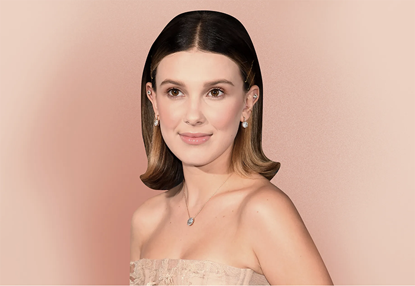
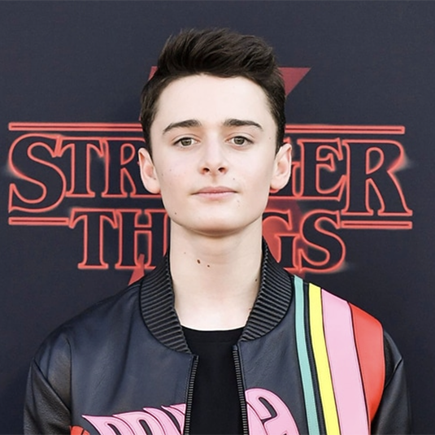
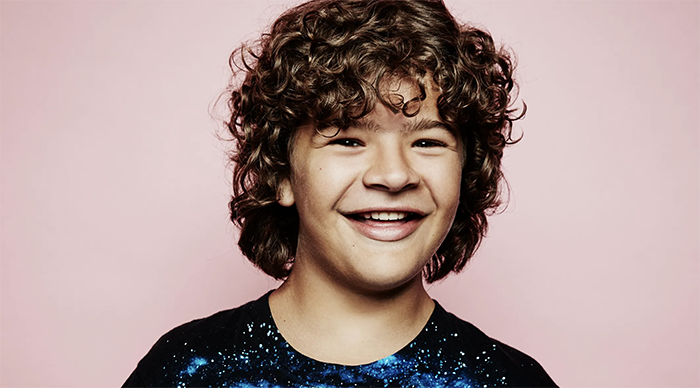
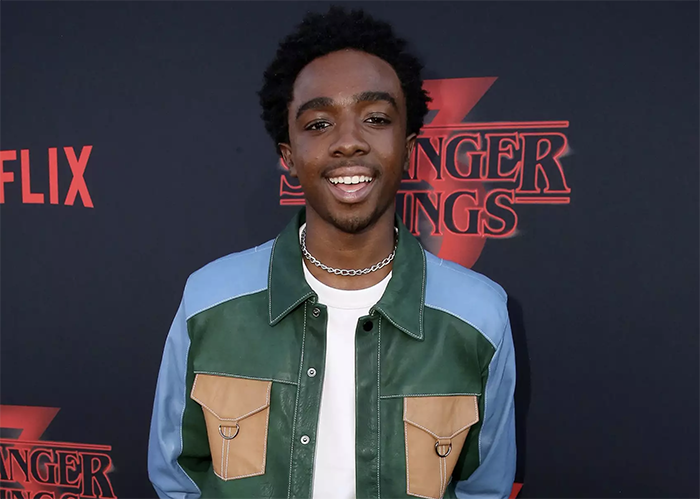
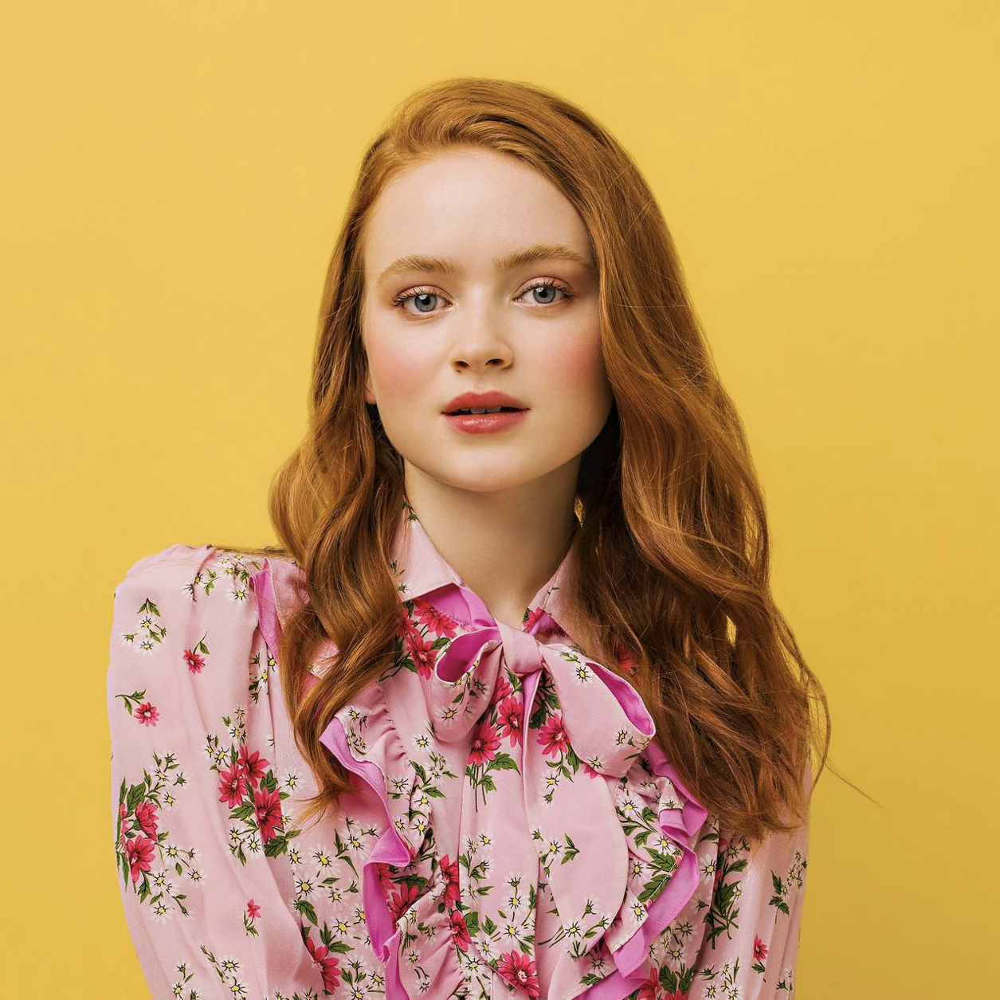

About the Cast
-
Finn Wolfard
Age - 19 years old.
Height - 5'11
Charachter - Mike -

Millie Brown
Age - 18 years old
Height - 5'2
Character - Eleven -

Noah Schnapp
Age - 17 years old
Height - 5'9
Character - Will -

Gaten Matarazzo
Age - 19 years old
Height - 5'11
Character - Dustin -

Caleb McLaughlin
Age - 20 years old
Height - 5'11
Character - Lucas -

Sadie
SinkAge - 19 years old
Height - 5'3
Character - Max